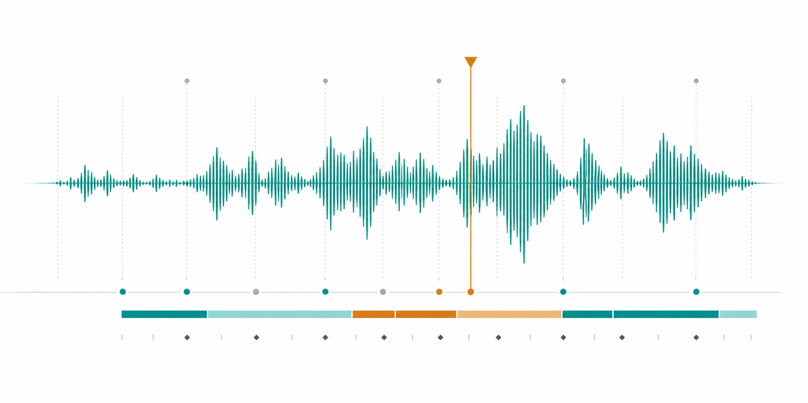
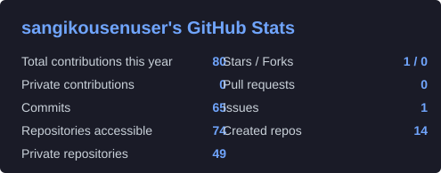
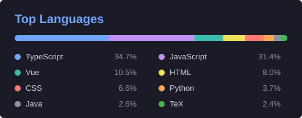

フロントエンド開発
HTML、CSS、JavaScript、TypeScript、Vue、React、Angular、Nuxt、Next、Tailwind、Bootstrap。
Web / App / Cloud Developer
フロントエンド、モバイルアプリ、バックエンド、クラウド基盤まで幅広く構築します。 アニメーションとオーディオエンジニアリングは、体験の質を高めるためのサブスキルです。

できること
HTML、CSS、JavaScript、TypeScript、Vue、React、Angular、Nuxt、Next、Tailwind、Bootstrap。
React Native、Flutter、Kotlin、Dart、Electron を使ったクロスプラットフォーム開発。
Node.js、Go、Java、C++、MongoDB、PostgreSQL、MySQL、Redis、Pandas による実装。
Docker、Apache、Nginx、Firebase、Cloudflare、AWS、GCP、GitHub Actions などの運用基盤。
制作領域
UI アニメーション、モーショングラフィックス、サウンドデザイン、編集、タイミング調整まで、 プロダクトの伝わり方を補強する制作も対応できます。Figma、Adobe XD、After Effects、 Premiere Pro、Photoshop、Illustrator も扱えます。
技術

